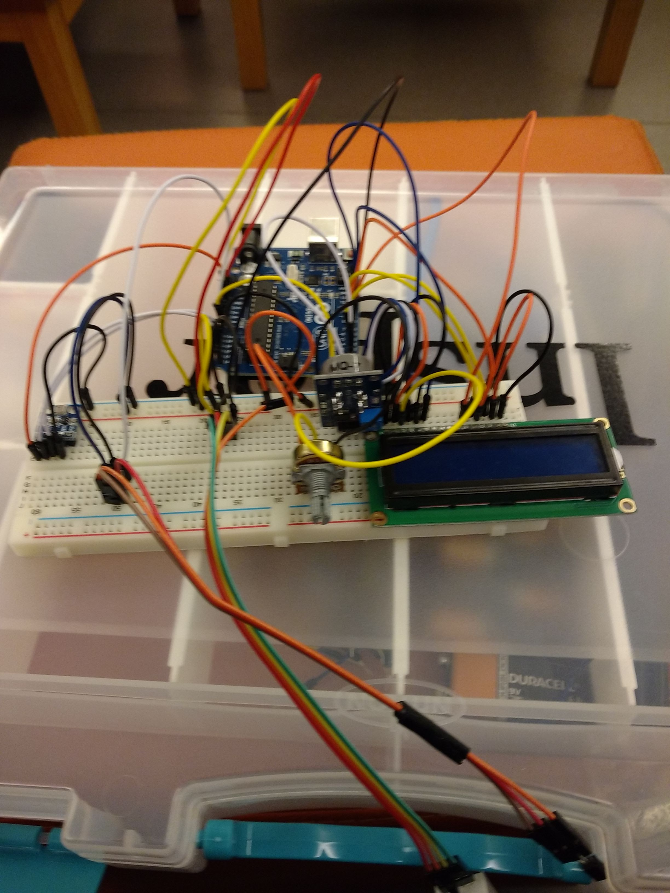

Estação Meteorológica
Nome do projeto: Estação Meteorológica
Data: 05 e 06/2016
Curso - Semestre: Instrumentação e Medição/1ºSemestre
Categoria: Eletrônica Digital
Documentação / Escrito Técnico / Escrita Científica: Sim
Conteúdo Acadêmico presente: Obtendo informações de sensores por arduino.
Palavras-Chave: Sensores; Eletrônica; Arduino; Programação<
Descrição: Neste projeto, tinhamos o objetivo de simular o funcionamento de uma estação meteorológica. Com a ajuda de mais 2 colegas de sala, através da utilização do arduino e de circuitos elétricos simples, colocamos em funcionamento 4 sensores base para obter valores em tempo real de Umidade, Tempertaura, Pressão e Concentração de Monóxido de Carbono(CO) no ar. O projeto foi todo relatado em um relatório de cunho científico e entregue ao professor da matéria.
Relacionados: Suricator
